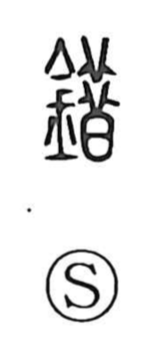

錯

Uncategorized
Kun: | On: saku, so
to polish ・ inlay ・ to mix ・ to intersect ・ mistake
Explanation
A phono-semantic character: the metal element signals the material, while 昔 serves as the phonetic, as it also does in characters like 醋. In ancient forms, 昔 depicts thin slices of meat laid out to dry in the sun; because such slices scatter and spread, the graph came to suggest thinness, scattering, and mingling. Applied to metalwork, 錯 describes polishing raw metal to bring out an inlaid design—carving and fitting precious metals into the surface—hence the sense “to polish.” From the image of lines and materials crossing and intermingling in inlay, the character extends to “to intersect,” “to be mixed up,” and, by further development, “to err.” In some compounds it substitutes for 措 and is read so, as in 錯意 (“attentive care”).